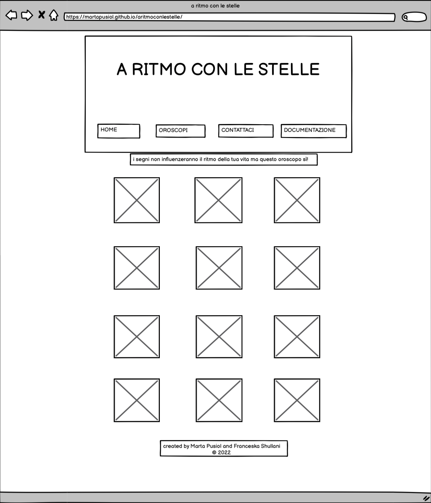
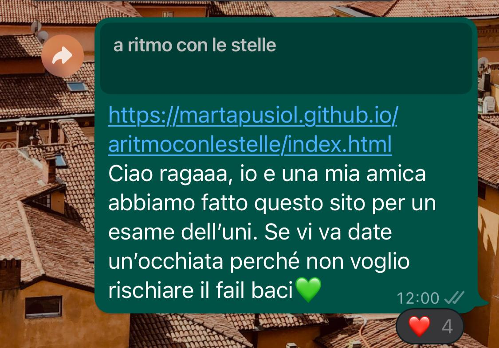
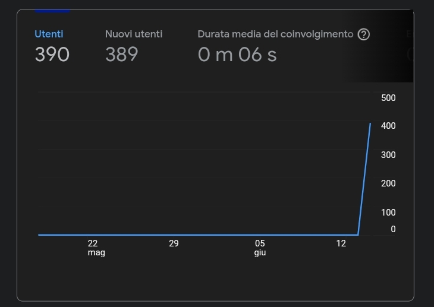
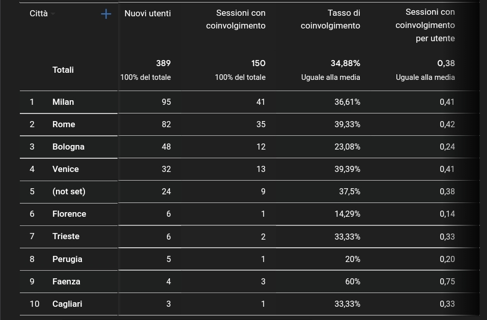

Abstract
Il sito web è proposto come un’unione tra due temi molto presenti nella nostra generazione, la musica e l’astrologia. Per questa ragione abbiamo impostato il sito web inserendo delle playlist, create da noi, collegate a Spotify con canzoni inerenti alle diverse caratteristiche dei segni zodiacali.
Il sito web è proposto come un’unione tra due temi molto presenti nella nostra generazione, la musica e l’astrologia. Per questa ragione abbiamo impostato il sito web inserendo delle playlist, create da noi, collegate a Spotify con canzoni inerenti alle diverse caratteristiche dei segni zodiacali.
Project Mangement Plan
I. Benchmarking
a. Obiettivi
L’obiettivo principale è evidenziare come, in realtà, le stelle siano collegate ad alcuni tratti dei nostri caratteri e comportamenti ed esporlo attraverso canzoni che racchiudono al meglio la metabolizzazione di sentimenti provati e decisioni prese in passato.
L’obiettivo principale è evidenziare come, in realtà, le stelle siano collegate ad alcuni tratti dei nostri caratteri e comportamenti ed esporlo attraverso canzoni che racchiudono al meglio la metabolizzazione di sentimenti provati e decisioni prese in passato.
b. Target
Il sito è rivolto principalmente ad un pubblico che va dai 15 ai 30 anni che possono essere già interessati o incuriositi dal tema scelto e dalle canzoni proposte all’interno di ogni singola playlist. La creazione del sito è avvenuta tenendo in considerazione anche coloro che solitamente prendono l’astrologia con scetticismo, proprio per introdurli “per gioco” allo zodiaco.
Il sito è rivolto principalmente ad un pubblico che va dai 15 ai 30 anni che possono essere già interessati o incuriositi dal tema scelto e dalle canzoni proposte all’interno di ogni singola playlist. La creazione del sito è avvenuta tenendo in considerazione anche coloro che solitamente prendono l’astrologia con scetticismo, proprio per introdurli “per gioco” allo zodiaco.
c. Competitors
Non abbiamo riscontrato siti ufficiali che si occupano di questa unione, nonostante ciò, abbiamo osservato come diversi account instagram che parlano di astrologia(es. Isabella Premutico del Merdoscopo) tendono ad associare testi di canzoni ai diversi segni zodiacali, andando a spiegare il perché dell’utilizzo di determinate parole e metafore. Inoltre, abbiamo preso come esempio le diverse playlist già presenti su Spotify, modificandole con canzoni, secondo noi, più adatte e più mainstream per allargare il target ed evitare che rimanesse di nicchia.
Non abbiamo riscontrato siti ufficiali che si occupano di questa unione, nonostante ciò, abbiamo osservato come diversi account instagram che parlano di astrologia(es. Isabella Premutico del Merdoscopo) tendono ad associare testi di canzoni ai diversi segni zodiacali, andando a spiegare il perché dell’utilizzo di determinate parole e metafore. Inoltre, abbiamo preso come esempio le diverse playlist già presenti su Spotify, modificandole con canzoni, secondo noi, più adatte e più mainstream per allargare il target ed evitare che rimanesse di nicchia.
Struttura e layout
a. Architettura del sito
Nella figura n.1 osserviamo l’architettura del sito attraverso questo grafico. Inizialmente troviamo la Home, suddivisa in Header, Main e Footer. Nella parte dedicata all’header troviamo il menu con le pagine “home”, “oroscopi”, “contattaci” e “documentazione”.. La sezione degli oroscopi presenta l’oroscopo mensile del mese di giugno di ogni segno zodiacale. La sezione contattaci presenta la newsletter dove ogni utente può inserire i propri dati ed iscriversi. Nel parte dedicata al main troviamo i collegamenti a tutte le successive pagine dei segni zodicali, dove troveremo il link per ciascuna playlist spotify e dei collegamenti alle pagine degli artisti dello stesso segno. Nella parte dedicata al footer troviamo i due link che portano agli account instagram delle creatrici del sito web.
Nella figura n.1 osserviamo l’architettura del sito attraverso questo grafico. Inizialmente troviamo la Home, suddivisa in Header, Main e Footer. Nella parte dedicata all’header troviamo il menu con le pagine “home”, “oroscopi”, “contattaci” e “documentazione”.. La sezione degli oroscopi presenta l’oroscopo mensile del mese di giugno di ogni segno zodiacale. La sezione contattaci presenta la newsletter dove ogni utente può inserire i propri dati ed iscriversi. Nel parte dedicata al main troviamo i collegamenti a tutte le successive pagine dei segni zodicali, dove troveremo il link per ciascuna playlist spotify e dei collegamenti alle pagine degli artisti dello stesso segno. Nella parte dedicata al footer troviamo i due link che portano agli account instagram delle creatrici del sito web.
b. Wireframe
a.home b.playlist  c.oroscopi d.contattaci e.documentazione e.documentazionec. Look and Feel
Tutte le grafiche per la progettazione del sito web sono state create da Franceska Shullani con Canva, usando i font(Moontime per il nome del sito nella copertina e per i diversi segni zodiacali nel main e nella sezione “oroscopi” dove abbiamo utilizzato anche Noto Sans) ed elementi pre impostati nella copertina. A partire da queste grafiche abbiamo successivamente preso le decisioni sulla struttura del sito: i colori sono stati scelti cercando di stabilire un’armonia tra scritte e immagini in tutte le pagine; difatti, il colore dello sfondo(#b6cfef) è lo stesso sia delle grafiche del main e sia della copertina principale, rendendo tutto molto omogeneo. Viene ripreso anche il colore #df5cbf per i contorni delle grafiche del main e per il menù, oltre ad esser stato inserito nella sezione “oroscopi” e “contattaci”. Successivamente, abbiamo aggiunto anche il colore #ffbd59 nel menù. La ripetizione della copertina e del colore di sfondo è stata fatta per mantenere l’omogeneità e la simmetria fra tutte le pagine.
Tutte le grafiche per la progettazione del sito web sono state create da Franceska Shullani con Canva, usando i font(Moontime per il nome del sito nella copertina e per i diversi segni zodiacali nel main e nella sezione “oroscopi” dove abbiamo utilizzato anche Noto Sans) ed elementi pre impostati nella copertina. A partire da queste grafiche abbiamo successivamente preso le decisioni sulla struttura del sito: i colori sono stati scelti cercando di stabilire un’armonia tra scritte e immagini in tutte le pagine; difatti, il colore dello sfondo(#b6cfef) è lo stesso sia delle grafiche del main e sia della copertina principale, rendendo tutto molto omogeneo. Viene ripreso anche il colore #df5cbf per i contorni delle grafiche del main e per il menù, oltre ad esser stato inserito nella sezione “oroscopi” e “contattaci”. Successivamente, abbiamo aggiunto anche il colore #ffbd59 nel menù. La ripetizione della copertina e del colore di sfondo è stata fatta per mantenere l’omogeneità e la simmetria fra tutte le pagine.
Linguaggi e strumenti
a. Linguaggi
HTML, CSS, Bootstrap
b. Strumenti
Sublime Text 4 : tool per la scrittura del codice
Bootstrap : sito per l’inserimento di elementi, grafiche e per modifiche varie
Html colors : sito per l’individuazione dei colori
Google font : sito per la scelta dei font
W3schools : sito per la creazione delle grafiche
Google Chrome : browser per la visualizzazione del sito
Canva : app per la creazione delle grafiche presenti nel sito
Fontawesome.com : sito per l’inserimento delle icone
Balsamiq Wireframe : tool per la creazione dei wireframes del sito
Github.com : sito per la pubblicazione sul web
Google Analytics : sito per il controllo dell’andamento delle visualizzazioni del sito
Instagram e Whatsapp : applicazioni per la promozione
Sublime Text 4 : tool per la scrittura del codice
Bootstrap : sito per l’inserimento di elementi, grafiche e per modifiche varie
Html colors : sito per l’individuazione dei colori
Google font : sito per la scelta dei font
W3schools : sito per la creazione delle grafiche
Google Chrome : browser per la visualizzazione del sito
Canva : app per la creazione delle grafiche presenti nel sito
Fontawesome.com : sito per l’inserimento delle icone
Balsamiq Wireframe : tool per la creazione dei wireframes del sito
Github.com : sito per la pubblicazione sul web
Google Analytics : sito per il controllo dell’andamento delle visualizzazioni del sito
Instagram e Whatsapp : applicazioni per la promozione
Communication Strategy Plan
I. Background
Su spotify sono presenti già playlist di questo genere (che raggruppano canzoni in base al segno zodiacale) ma sono spesso create da utenti differenti e dopo averne analizzate una certa quantità abbiamo deciso di creare noi una playlist per ogni segno, cercando di essere il più precise possibile. Creando questo sito rendiamo più facile il ritrovamento delle playlist, con la possibilità di provare ad ascoltare quelle di altri segni, sempre create con gli stessi ideali. Inoltre aggiungiamo la possibilità di legegre il proprio oroscopo.
Su spotify sono presenti già playlist di questo genere (che raggruppano canzoni in base al segno zodiacale) ma sono spesso create da utenti differenti e dopo averne analizzate una certa quantità abbiamo deciso di creare noi una playlist per ogni segno, cercando di essere il più precise possibile. Creando questo sito rendiamo più facile il ritrovamento delle playlist, con la possibilità di provare ad ascoltare quelle di altri segni, sempre create con gli stessi ideali. Inoltre aggiungiamo la possibilità di legegre il proprio oroscopo.
II. Obiettivi comunicativi
Il nostro progetto vuol far conoscere al meglio la possibile connessione tra due tematiche diverse che appassionano entrambe le creatrici del sito e numerose persone attorno a noi.
Il nostro progetto vuol far conoscere al meglio la possibile connessione tra due tematiche diverse che appassionano entrambe le creatrici del sito e numerose persone attorno a noi.
III. Target audience e messaggio
Il sito web si rivolge a un pubblico che va dai 15 ai 30 anni, andando a raggruppare al suo interno quasi “due” generazioni. Un progetto che richiama tutti coloro che sono già appassionati o sono semplicemente incuriositi dai temi che abbiamo unito per poi condividere le loro playlist preferite ed estendere il target ad una audience più ampia.
Il sito web si rivolge a un pubblico che va dai 15 ai 30 anni, andando a raggruppare al suo interno quasi “due” generazioni. Un progetto che richiama tutti coloro che sono già appassionati o sono semplicemente incuriositi dai temi che abbiamo unito per poi condividere le loro playlist preferite ed estendere il target ad una audience più ampia.
PROMOZIONE
Il sito web è stato promosso online attraverso i diversi social network disponibili sulle piattaforme. Abbiamo condiviso principalmente il link nelle stories di Instagram e su Whatsapp nei gruppi sia dei nostri colleghi dell’università e sia dei nostri amici e familiari. I feedback ricevuti riguardavano dei piccoli accorgimenti per quanto riguarda la grafica.
 Il sito web è stato promosso online attraverso i diversi social network disponibili sulle piattaforme. Abbiamo condiviso principalmente il link nelle stories di Instagram e su Whatsapp nei gruppi sia dei nostri colleghi dell’università e sia dei nostri amici e familiari. I feedback ricevuti riguardavano dei piccoli accorgimenti per quanto riguarda la grafica.

VALUTAZIONE DEI RISULTATI
Abbiamo tenuto traccia delle visualizzazioni utilizzando il sito Google Analytics che ci ha permesso di analizzare al meglio l’andamento del nostro sito web e della promozione avvenuta. Siamo riuscite a superare il nostro obiettivo di 50 visualizzazioni, arrivando a 390 provenienti da utenti differenti, anche da diverse città e paesi.
 
Abbiamo tenuto traccia delle visualizzazioni utilizzando il sito Google Analytics che ci ha permesso di analizzare al meglio l’andamento del nostro sito web e della promozione avvenuta. Siamo riuscite a superare il nostro obiettivo di 50 visualizzazioni, arrivando a 390 provenienti da utenti differenti, anche da diverse città e paesi.